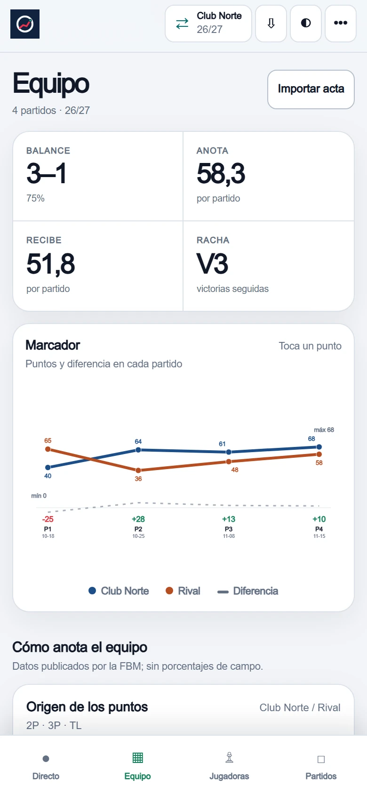

Importa el acta FBM
Elige el Excel y revisa rival, marcador y fecha antes de guardar.
Plantilla · minutos · anotación · rivalImporta actas FBM, apunta el Directo y convierte cada partido en información clara para entrenar, comparar y decidir.
Se instala como una app y sigue funcionando aunque pierdas la conexión.

Desde el Excel oficial hasta una lectura útil para el siguiente entrenamiento.
Elige el Excel y revisa rival, marcador y fecha antes de guardar.
Plantilla · minutos · anotación · rivalRegistra robos, pérdidas y rebotes ofensivos por cuarto y persona.
Botones grandes para usar durante el partidoConsulta evolución, comparaciones, cuotas, balances y mapas de tiro.
Equipo · personas · partidosConserva el acta y añade lo que has observado sin confundir ausencia con cero.
Escalas, mínimo, máximo y línea cero ayudan a leer cada gráfico.
Plantilla, partidos y permisos permanecen separados al cambiar de equipo.
Editor para colaborar; Lector para consultar sin modificar datos.
Ataque y defensa por partido o temporada, editables desde el móvil.
Ábrela desde la pantalla de inicio y sigue trabajando en el pabellón.
Capturas anonimizadas de las funciones disponibles, sin promesas ni datos inventados.
Balance, marcador, origen de puntos, minutos y estadísticas.

Robos, pérdidas, rebotes ofensivos y posesiones extra.

Medias, cuotas, balance y evolución partido a partido.

Enlaces privados de Editor y Lector que el propietario puede revocar.
Los datos se guardan primero en el dispositivo. La nube privada solo interviene al sincronizar o compartir.
No. El botón instala la PWA publicada o abre instrucciones del navegador; no inicia una compra.
Sí. Abre esta página en Safari, pulsa Compartir y después «Añadir a pantalla de inicio». Apple exige ese paso manual.
Sus navegadores internos suelen bloquear la instalación. Usa «Abrir en Chrome» o «Abrir en Safari» y vuelve a pulsar Instalar gratis.
Sí, después de la primera carga. Los datos se guardan localmente y la sincronización se reintenta cuando vuelve la conexión.
No. Un equipo puede quedarse solo en el dispositivo. La nube se usa al sincronizar o crear un enlace privado.
No. Se quita de la plantilla actual, pero sus estadísticas de los partidos guardados se conservan.
Un toque en Chrome, Edge y Android cuando el navegador lo permite; pasos visuales en iPhone y navegadores internos.